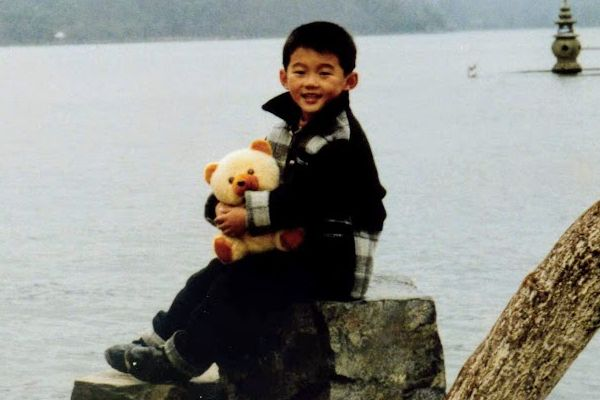

1992
Ding learned chess at a very young age, beginning his journey toward becoming one of the most formidable players in the world.
Ding learned chess at a very young age, beginning his journey toward becoming one of the most formidable players in the world.
Ding learned chess at the age of four. His hometown, Wenzhou, is known in China for its strong chess culture, and as a child Ding studied under the same coaches that taught women’s world champion Zhu Chen.
He finished second in the boys under-10 division at the 2003 Fédération Internationale des Échecs (FIDE) World Youth Chess Championship, and he also finished second at the 2004 World Youth Championship in the boys under-12 division.
Ding’s victory at the 2009 Chinese championship is regarded as his breakout tournament. He was one of the lowest rated players and yet was undefeated even against grandmasters.
2023 FIDE World Championship. Ding Liren defeats Ian Nepomniachtchi to win World Chess Championship.